Fisicpy
Main page About Projects Achievements Articles Instagram VK GitHub TwitterFisicpy
Main page About Projects Achievements Articles Instagram VK GitHub TwitterToday we will talk about fractals. First you need to understand the definition of fractals. A fractal - a set that has the property of self-similarity.
In everyday life, we often encounter fractals. In everyday life, it can be snowflakes, ferns, snail shells, lightning, and more.

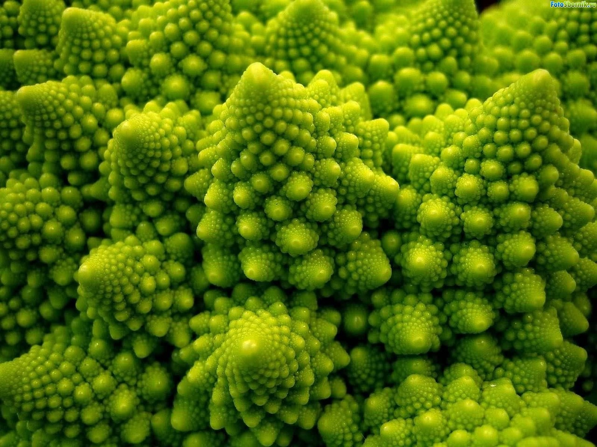

An example of a simple fractal is the Sierpinski triangle. The first mathematical description of this fractal was published by the Polish mathematician Waclaw Sierpinski in 1915. To build a Sierpinski triangle, you need to build a large triangle, and then build another triangle, which is obtained by connecting the midpoints of the sides of the large triangle. After that, you will get four identical triangles of a smaller size. Next, you need to repeat the algorithm with the resulting triangles several times, ignoring the triangle obtained when connecting the midpoints of the sides of a large triangle. You should get something like this:
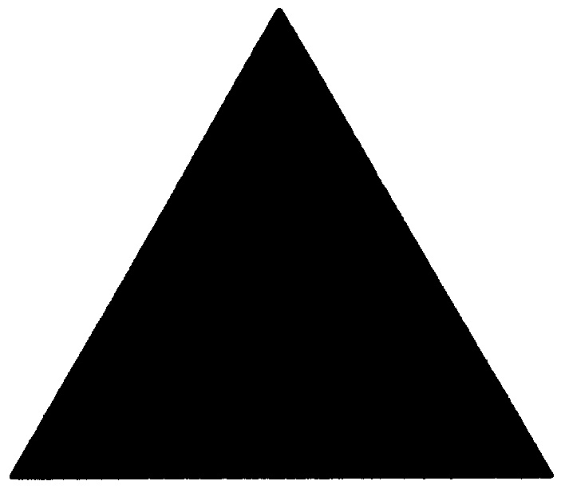
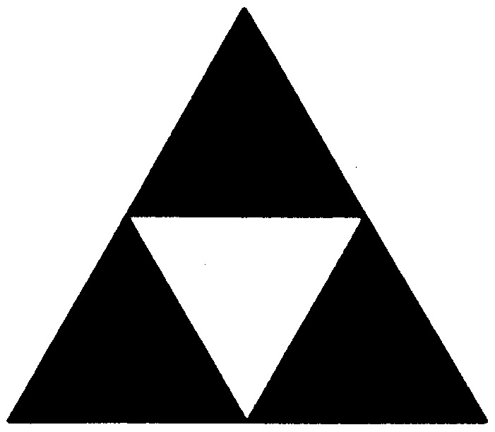
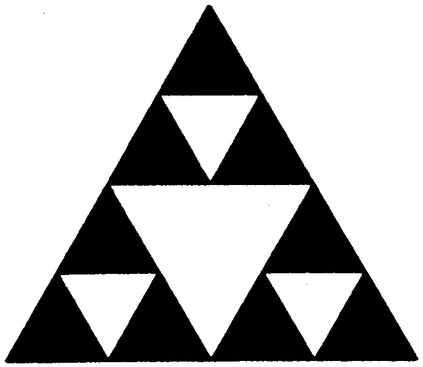
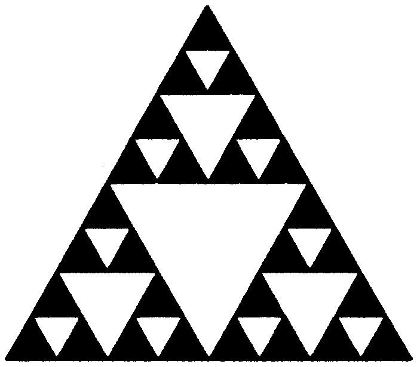
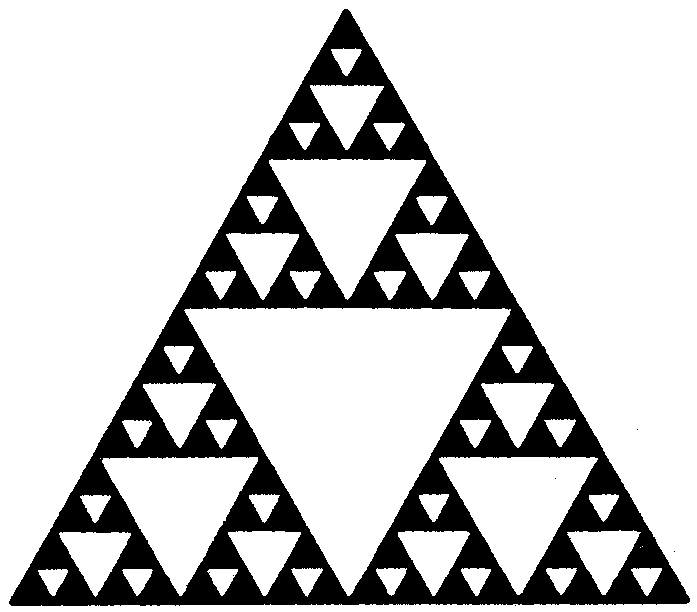
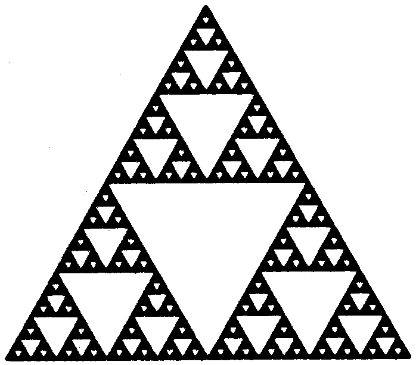
This animation show Sierpinski triangle's property of self-similarity:
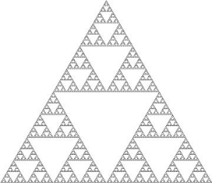
You can also draw a Sierpinski triangle by iterating or playing a game of chaos. Chaos theory is a branch of mathematics focusing on the study of chaos — dynamical systems whose apparently random states of disorder and irregularities are actually governed by underlying patterns and deterministic laws that are highly sensitive to initial conditions.
Since we are using the chaos game drawing method, we will need to repeat the same action hundreds and thousands of times. For automation, we will use a python script with the pygame module. I will not go into the details of python programming and the use of the pygame module because this article is not about python programming, but about fractals.
Let's continue talking about the Sierpinski triangle. To draw a Sierpinski triangle first you need to put three random points on the plane:
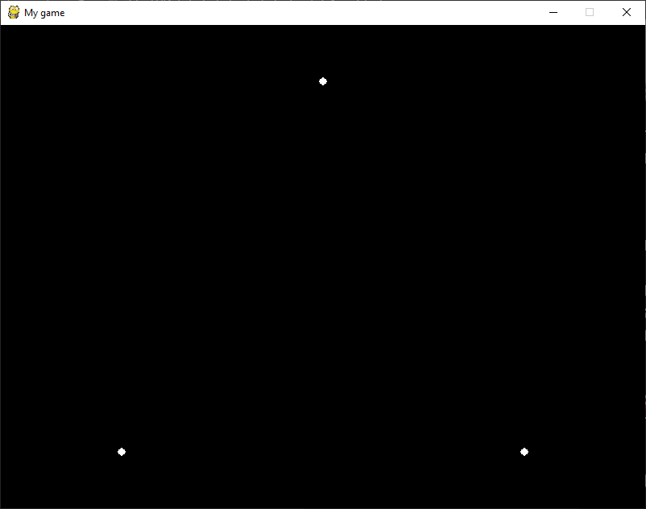
Next, we need to put a random point (marked with a red arrow), it can be located anywhere on this plane, even inside the triangle formed by the three starting points, even outside this triangle:
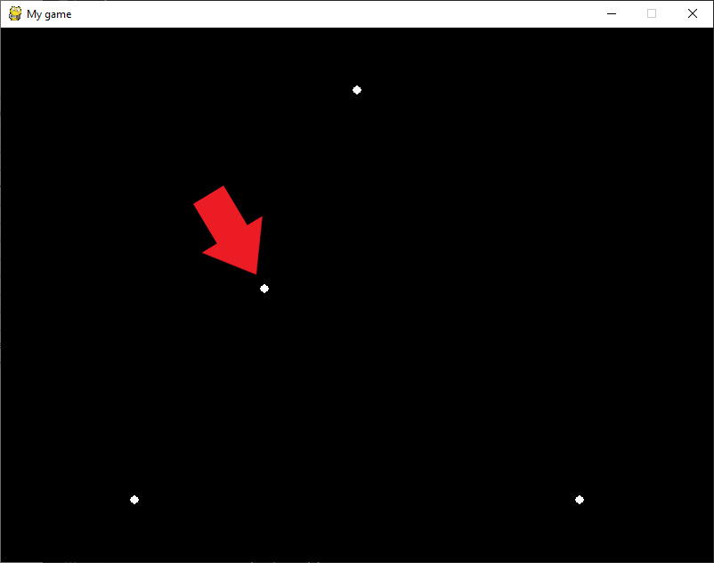
The next step is that we have to randomly take one of the three main points and the point that we put in the previous step, and find the middle of the segment created by these two points, and put a new point there (marked with a red arrow):
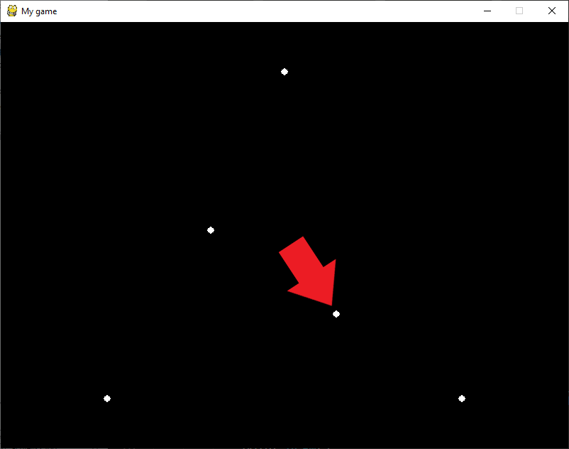
To find the coordinates of the midpoint of a segment from the coordinates of two points describing this segment, I used this function:
def get_coords_center_line(x1, y1, x2, y2):
x3 = int((x1 + x2) / 2)
y3 = int((y1 + y2) / 2)
return x3, y3
The next step, we must once again select a random point from the three main ones and again find the midpoint of the segment between the selected point and the last set point. This step will need to be repeated many times before we draw the Sierpinski triangle:

It is very interesting that despite the fact that our construction of the Sierpinski triangle is completely built on chaos, which manifests itself in a completely chaotic, random choice of one of the main points, we will still get this fractal.
Perhaps you have a question "What if you put the starting point in the supposed empty triangle formed by the midpoints of the segments of the large triangle, then what will happen?". As mentioned earlier, we can put the first point at any place on the plane, that is, if we put the starting point in the assumed empty triangle, form the middle of the segments of the large triangle, then we will only get a pair of points that are in the voids. But the Sierpinski triangle will still work. After all, we should not look at the behavior of individual points, but at the group behavior of a large number of points:
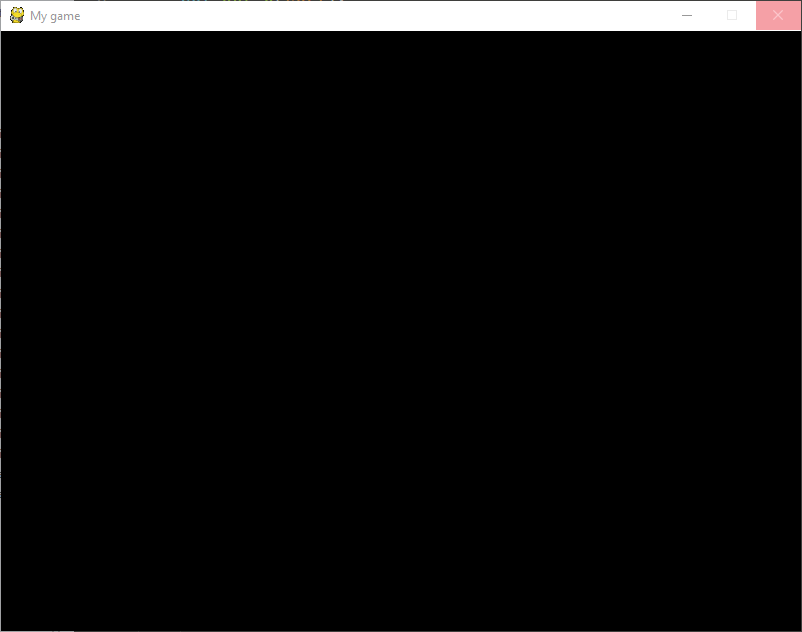
As we can see, we have three points that are out of the general behavior, but if you look at the general behavior of the points, it is completely predictable.
Fractals are very beautiful mathematical figures found in real life, and all this beauty can be obtained from pure chaos.
Code from this article, GitHub: https://github.com/fisicpy/chaos-theory
Chaos theory, wikipedia: https://en.wikipedia.org/wiki/Chaos_theory
Sierpinski triangle, wikipedia: https://en.wikipedia.org/wiki/Sierpiński_triangle
Waclaw Sierpinski, wikipedia: https://en.wikipedia.org/wiki/Wacław_Sierpiński
Fractal, wikipedia: https://en.wikipedia.org/wiki/Fractal